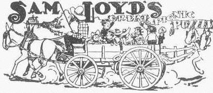

Great Picnic Puzzle - Solution
The Puzzle:

When they started off on the great annual picnic every wagon in town was pressed into service, each one carrying the same number of people. Half way to the picnic ground ten wagons broke down, so it was necessary for each of the remaining wagons to carry one more person.
When they started for home it was discovered that fifteen more wagons were out of commission, so on the return trip there were three persons more in each wagon than when they started out in the morning.
Now who can tell how many people attended the great annual picnic?
Our Solution:
There must have been 900 picnickers who would be seated 9 to a wagon if there were 100 vehicles, or 10 to a wagon after 10 of the wagons had broken.
When they started for home with 75 wagons, it was necessary for 12 persons to ride in each wagon (3 more than the 9 per wagon in the morning).
Solving with Algebra
We can write some formulas. With "w" being number of wagons, and "p" people per wagon the puzzle tells us:
wp = (w−10)(p+1) = (w−25)(p+3)
Now solve!
Expand the brackets: wp = wp + w − 10p − 10 = wp + 3w − 25p − 25
Subtract wp from each: 0 = w − 10p − 10 = 3w − 25p − 75
Multiply middle part by 3: 0 = 3w − 30p − 30 = 3w − 25p − 75
Subtract middle from last: 0 = 3w − 30p − 30 = 3w − 25p − 75 − (3w − 30p − 30)
Simplify: 0 = 5p − 45
Lastly: p = 9
When they started for home with 75 wagons, it was necessary for 12 persons to ride in each wagon (3 more than the 9 per wagon in the morning).
Solving with Algebra
We can write some formulas. With "w" being number of wagons, and "p" people per wagon the puzzle tells us:
wp = (w−10)(p+1) = (w−25)(p+3)
Now solve!
Expand the brackets: wp = wp + w − 10p − 10 = wp + 3w − 25p − 25
Subtract wp from each: 0 = w − 10p − 10 = 3w − 25p − 75
Multiply middle part by 3: 0 = 3w − 30p − 30 = 3w − 25p − 75
Subtract middle from last: 0 = 3w − 30p − 30 = 3w − 25p − 75 − (3w − 30p − 30)
Simplify: 0 = 5p − 45
Lastly: p = 9
Puzzle Author: Loyd, Sam
See this puzzle without solution